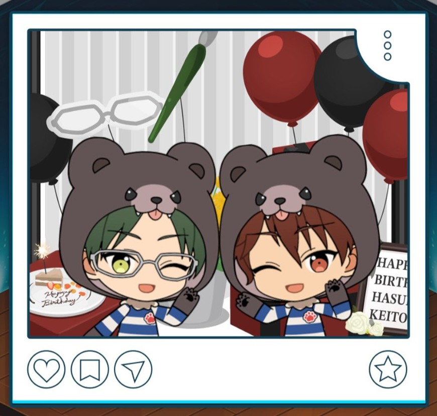
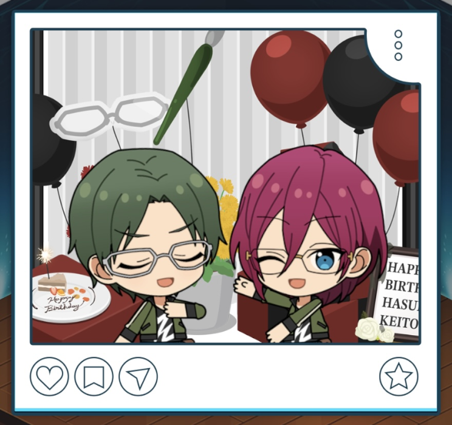

(2026) Keito Hasumi Birthday

| Day 1 |
|---|
Thank you. I'm happy this day managed to come as well. I hope to make this year a good one. |
Before the Stream

I’m really grateful you two came. Today, please follow the itinerary I gave you guys.
It’s an honor to have been invited by you. There is no need to worry, I've gone over it thoroughly ♪
Still, I can’t say I’ve ever seen a stream have such a nitty-gritty schedule like this before, Danna.1
Well, having everything planned to the minute is just the basics, just in case something unexpected happens.
Hahah. You’re the birthday boy, so try not to worry too much and enjoy yourself, hear me?
Hmm. Then I’ll leave the progress to you guys. Perhaps I should try and let myself be celebrated, at least for today.
Starting the Birthday Live Stream

This is Hasumi Keito. It’s about time for the birthday livestream, so let’s begin.
Hmm. I saw a comment that said, "that was like an opening introduction." Was it that stiff? I didn’t mean for it to be, though…
I’m still not very used to such a large number of people celebrating my birthday, but... Today, I intend on letting loose a little and having fun interacting with everyone.
We’ve got some dependable guests that will be joining us, and I’ll do my best to read everyone’s comments. Please don’t hold back, feel free to write something.
And so, I would be happy if you all stuck around until the very end. Take good care of me.
During the Birthday Live Stream 1

Happy Birthday, Hasumi-senpai! I'm honored to have been invited on such a special occasion ♪
Thank you. I was looking forward to getting to talk with you too, Suou.
I know this is jumping right into things, but will you tell us what your goals are for this next year of your life?
Let’s see… This year, I’m hoping to take what I’ve been able to build so far and make it even stronger.
That’s just like you to have such a sincere goal, Senpai. I am rooting you on in the small ways that I can ♪
Ahh, how encouraging. I’m going keep at it each and every day so I can live up to your expectations.
During the Birthday Live Stream 2

How’s the lens-cloth I gave ya workin’ out for ya? Helpful?
Indeed. I have several ones just like it, but I was surprised with how especially easy to use yours was.
Glasses are your partner, after all, Danna. I chose some nice lookin’ fabric and made it myself so you can keep all your glasses spick and span.
Something made with no corners cut… That’s a Kiryu-kind of present, alright. I’ll cherish it whenever I use it.
Yeah? You better look forward to dinner after this too. Kanzaki and Taki have gotta be all excited settin’ up for it right now.
I’m so grateful. I’ll make sure to enjoy today to my heart's content…
During the Birthday Live Stream 3

It’s about time for the stream to start wrapping up. I’m truly grateful you all stayed until the very end.
I feel like while we were talking to Suou and Kiryu, I said things I usually wouldn’t say.
I wonder if I conveyed the things I love and the things I was thinking to everyone, even just a little.
Whenever I receive these blessings, it turns into an opportunity to reexamine myself. I feel like my motivation has been renewed.
As I get older, what paths will I choose? What will I accomplish? I’d be glad if you all continued to watch over me.
Truly, thank you for today. … Until we meet again.
Birthday Quiz
All questions are formatted into multiple-choice questions here; multiple choice answers are translated as was in the app and in the same order. Fill-in-the-blank questions have options I created. If you are looking for the spellings for the fill-in-the-blank questions, see the section below.
If there are any errors or questions I'm missing, feel free to DM me or email at citrinesea.io@gmail.com
 | Below is the quiz questions in dropdown format. Click each dropdown below to reveal the answers to each question. Hiragana or katakana is included in typing-required questions to help you with your quiz! |
Multiple Choice
When it comes to the unit outfits that belong to Keito’s unit AKATSUKI, where does Keito wear sleeves? On the left or the right?
His right arm • His left arm • On both arms • He doesn't wear sleeves
Click the dropdown to see the answer
The correct answer is:On both arms.
In the story Scout! Keito Lecture, which idol finds Keito’s glasses in the river?
Hiiro Amagi • Aira Shiratori • Mika Kagehira • Yuzuru Fushimi
Click the dropdown to see the answer
The correct answer is:Hiiro Amagi
In the story "Late Summer Lesson," which idol ends up getting lectured by Keito for trying to bring fireworks on campus?
Hokuto Hidaka • Subaru Akehoshi • Makoto Yuuki • Mao Isara
Click the dropdown to see the answer
The correct answer is:Hokuto Hidaka
On the morning of Keito's birthday, how many times did he put his alarm clock on "snooze" before he got up?
0 • 1 • 2 • 3
Click the dropdown to see the answer
The correct answer is:0
What jobs do Keito's parents have?
Idols • Temple clergy • Police officers • Office workers
Click the dropdown to see the answer
The correct answer is:Temple clergy
What role is Keito often in charge of for Dramatica?
Music composition • Lighting • Script-writing • Choreography
Click the dropdown to see the answer
The correct answer is:Script-writing
What is Keito's blood type?
A • B • O • AB
Click the dropdown to see the answer
The correct answer is:A
What makes Keito's lectures distinct?
They're short • They're long • He easily devolves into tears • They're gentle and kind
Click the dropdown to see the answer
The correct answer is:They're long
In the story "Tanabata Fes", what vocal shout does Keito give the crowd in the middle of giving fanservice?
Zu-kkyu~n • Ki-ra~n • Kyu~u • Ba-kyu~un
Click the dropdown to see the answer
The correct answer is:Ba-kyu~un
In the story "Repayment Fes," which of the following is NOT one of the items Keito lists as "mankind's greatest inventions"?
Glasses • The printing press • Electricity • Antibiotics
Click the dropdown to see the answer
The correct answer is:Antibiotics
Which song does Keito sing in?
It's (k)not lov? • Prologue and after that • One-Way Ticket to Spring Rain • Ai&$!!
Click the dropdown to see the answer
The correct answer is:It's (k)not lov?
In the story "VS AUDIENCE", which AKATSUKI song do Keito and Ibuki have a jam session with?
Hana Akari no Koibumi • Hyakka Ryouran, Akatsukiyo • Kengeki no Mai • Gekkamusou, Kurenai no Mai
Click the dropdown to see the answer
The correct answer is:Hyakka Ryouran, Akatsukiyo
In the story "Gourmand's Fragrance", what did Keito order with his chocolate cake when he and Nazuna visited a cafe together?
Gateau au chocolat • Chocolate terrine • Sachertorte • Nama chocolate
Click the dropdown to see the answer
The correct answer is:Nama chocolate
Which idol was the first one to wish Keito "Happy Birthday" this year?
Eichi Tenshouin • Souma Kanzaki • Ibuki Taki • Kuro Kiryu
Click the dropdown to see the answer
The correct answer is:Kuro Kiryu
Who was the student council president during the time Keito was the student council vice-president?
Tori Himemiya • Rei Sakuma • Mao Isara • Eichi Tenshouin
Click the dropdown to see the answer
The correct answer is:Eichi Tenshouin
What was the first thing Keito ate on his birthday morning?
Curry rice • Umeboshi • Toast • Pickled daikon radish
Click the dropdown to see the answer
The correct answer is:Curry rice
In the story "Hanafuda", which hanafuda card did Keito say a Japanese-style idol threw at him?
The one-point willow card • The wisteria tanzaku • The deer and maple • The one-point peony card
Click the dropdown to see the answer
The correct answer is:The one-point willow card
The "Flower Fes" Keito and others participated in was hosted by a local area near Yumenosaki. Which location was it?
In front of the train station • The cherry blossom park • The shopping district • The coastline
Click the dropdown to see the answer
The correct answer is:The shopping district
In the scout story "WANTED!", which idol did Keito scold and tell to "live his life seriously"?
Eichi Tenshouin • Kaoru Hakaze • Chiaki Morisawa • Shu Itsuki
Click the dropdown to see the answer
The correct answer is:Kaoru Hakaze
What nickname does Kuro use for Keito?
Chief (okashira) • Rogue • Sea snake-san • Boss (danna)
Click the dropdown to see the answer
The correct answer is:Boss (danna)
Among these cards, what is the name of the bloomed card that features Keito without his glasses?
The World Stage Under the Heavens • Moon of Fresh Blood • Steady Dominant • The Still Unknown Me
Click the dropdown to see the answer
The correct answer is:Moon of Fresh Blood
Fill in the Blank
What was the name of Keito's favorite show when he was young?
Click the dropdown to see the answer
The correct answer is:Vampire Shogun (ばんぱいあ将軍).
Type ば•ん•ぱ•い•あ•し•ょ•う•ぐ•ん
Keito doesn't do well during Setsubun because he isn't good with "____". Fill in the blank.
Click the dropdown to see the answer
The correct answer is:Soybeans (大豆)
Type だ•い•ず
Keito's singing voice has a "strong, ____" quality to it. Fill in the blank.
Click the dropdown to see the answer
The correct answer is:Lustrous (艶やか)
Type あ•で•や•か
Quarrel Fes, the DreFes Keito and the others participated in, goes by another name: "The Loincloth Festival of ____". Fill in the blank.
Click the dropdown to see the answer
The correct answer is:Sweat and Muscle (汗と筋肉)
Type あ•せ•と•き•ん•に•く
How much does Keito weigh? (in kg)
Click the dropdown to see the answer
The correct answer is:61
In the story "Tanabata Festival", Keito calls the current system he and Eichi had built, "the ____ we built." Fill in the blank.
Click the dropdown to see the answer
The correct answer is:Millennial Kingdom (千年王国)
Type せ•ん•ね•ん•お•う•こ•く
When Kuro first met Keito, he said that Keito's name "sounded like ____". Fill in the blank.
Click the dropdown to see the answer
The correct answer is:A girl's name (女の子)
Type お•ん•な•の•こ
How tall is Keito? (in cm)
Click the dropdown to see the answer
The correct answer is:178
Keito's character-marketing slogan is, "The ____ who decorates the dim world with melody." Fill-in-the-blank.
Click the dropdown to see the answer
The correct answer is:Lotus (蓮華)
Type れ•ん•げ
According to Keito, he isn't good with dealing with "a sudden ______." Fill in the blank.
Click the dropdown to see the answer
The correct answer is:Change of plans (ハプニング)
Type は•ぷ•に•ん•ぐ
Office Conversations
| Polaroid | Office Line |
|---|---|
 | It’s a delight being celebrated. Don’t be so stiff ‘n formal, at least for today. |
 | This is a photo I'll always remember. I am deeply pleased to hear you say that. |
 | Would it have been better if I smiled more? You’re serious even on your birthday, Hasumi-san! |
 | To think, you remembered my birthday... I owe you quite a lot, after all. |
 | Thanks to you, we were able to get a lovely keepsake. I’m going to cherish this picture for the rest of my life. |
 | I’m grateful for your well-wishes. Please enjoy this special day to your heart’s content. |
Translation Notes
- ↑ Kuro often refers to Keito as 旦那 (danna, lit. master ), or "boss". He'll also use Hasumi-no-danna.